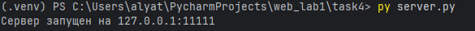
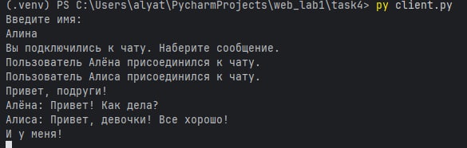
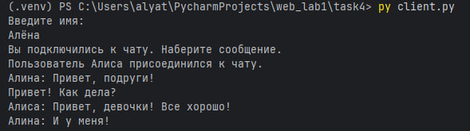
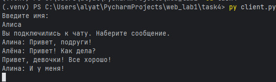
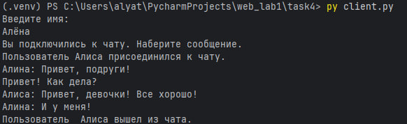

Задание 4: Многопользовательский чат на TCP
Условие
Реализовать многопользовательский чат.
Требования:
- Обязательно использовать библиотеку
socket. - Для многопользовательского чата необходимо использовать библиотеку
threading.
Реализация:
- Протокол TCP: 100% баллов.
- Протокол UDP: 80% баллов.
- Для UDP используйте threading для получения сообщений на клиенте.
- Для TCP запустите клиентские подключения и обработку сообщений от всех пользователей в потоках. Не забудьте сохранять пользователей, чтобы отправлять им сообщения.
Принцип работы
-
Сервер:
- запускается и слушает входящие подключения;
- при подключении нового клиента — создаёт поток для его обработки;
- хранит список всех подключённых клиентов;
- пересылает каждое полученное сообщение всем остальным клиентам.
-
Клиент:
- подключается к серверу;
- в одном потоке — отправляет сообщения;
- в другом потоке — принимает сообщения от сервера и отображает их.
-
Работа в реальном времени достигается за счёт потоков, обрабатывающих ввод и вывод параллельно.
Код программы
Сервер (server.py)
import socket
import threading
# Блокировка для безопасной работы с clients из разных потоков
clients = {} # {socket: name}
clients_lock = threading.Lock()
def broadcast(message, sender_socket=None):
with clients_lock:
receivers = [c for c in clients.keys() if c != sender_socket]
for client in receivers:
try:
client.sendall(message.encode("UTF-8"))
except (ConnectionResetError, ConnectionAbortedError, OSError) as e:
print(f"Ошибка соединения: {e}")
client.close()
with clients_lock:
clients.pop(client, None)
def handle_client(sock, address):
try:
sock.send("Введите имя: ".encode('UTF-8'))
name = sock.recv(1024).decode('UTF-8').strip()
# регистрируем клиента
with clients_lock:
clients[sock] = name
sock.send("Вы подключились к чату. Наберите сообщение.".encode('UTF-8'))
broadcast(f"Пользователь {name} присоединился к чату.", sender_socket=sock)
while True:
client_msg = sock.recv(1024)
if not client_msg:
break # Если пусто - клиент отключился
broadcast(f"{name}: {client_msg.decode('UTF-8').strip()}", sender_socket=sock)
finally:
with clients_lock:
username = clients.pop(sock, 'Неизвестный') # Удаляем пользователя
broadcast(f"Пользователь {username} вышел из чата.")
sock.close()
def run_server():
with socket.socket(socket.AF_INET, socket.SOCK_STREAM) as server_socket:
server_socket.setsockopt(socket.SOL_SOCKET, socket.SO_REUSEADDR, 1)
server_socket.bind(('127.0.0.1', 11111))
server_socket.listen()
print("Сервер запущен на 127.0.0.1:11111")
while True:
client_socket, client_address = server_socket.accept()
# Для каждого клиента запускаем отдельный поток
threading.Thread(
target=handle_client,
args=(client_socket, client_address),
daemon=True
).start()
if __name__ == "__main__":
run_server()
Клиент (client.py)
import socket
import threading
def receive_messages(sock):
while True:
try:
message = sock.recv(1024)
if not message:
print("Соединение закрыто сервером.")
break
print(message.decode('UTF-8'))
except (ConnectionResetError, ConnectionAbortedError, OSError) as e:
print(f"Ошибка соединения: {e}")
break
def run_client():
with socket.socket(socket.AF_INET, socket.SOCK_STREAM) as client_socket:
client_socket.connect(('127.0.0.1', 11111))
# Запускаем отдельный поток для получения и печати входящих сообщений
threading.Thread(
target=receive_messages,
args=(client_socket,),
daemon=True
).start()
while True:
try:
message = input()
if message:
client_socket.send(message.encode('UTF-8'))
except (ConnectionResetError, ConnectionAbortedError, OSError) as e:
print(f"Ошибка соединения: {e}")
break
if __name__ == "__main__":
run_client()
Запуск
- Необходимо открыть два терминала.
- В первом запустите сервер:
py server.py - Во других трёх терминалах запустите клиент:
py client.py - Для каждого клиента введите имя.
- Можно набирать сообщения.
Результат
Запустив сервер, видим: 
Запускаем трёх клиентов. Набираем сообщения.
Терминал первого клиента: 
Терминал второго клиента: 
Терминал третьего клиента: 
Один клиент отсоединился. Что отображается в терминалах других клиентов: 
Сообщения пользователя отображаются в терминалах других клиентов, но не в его. Цели задания выполнены.
Выводы
- Реализован многопользовательский чат с использованием
socket,threadingи TCP. - Сервер поддерживает несколько одновременных подключений, обрабатывая каждого клиента в отдельном потоке.
- Сообщения корректно доставляются между всеми клиентами в реальном времени.
- Приложение продемонстрировало устойчивую работу при подключении/отключении клиентов.